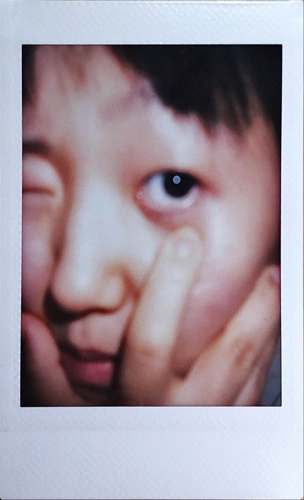

I

Ich beobachte sehr gern die Stadt. Mein allgemeine Thema ist der Aufbau den Neustädte. Und weitere konkrete Themen sind die verschiedene Geschehen im Alltag, je nach Blickwinkel als brutale Taten Interpretiert werden können.
Als ich klein war, habe ich gern das Aquarium besucht und ich besuche heutzutage auch ab und zu mal. Irgendwann im Aquarium hatte ich mich ganz fremd gefühlt, dass die Fische eigentlich ganz andere Atmungsorgane als Mensch haben. Falls ich mit Fische in der Natur gemeinsam wäre. könnte ich in ihren Bereich nicht atmen. Das war ganz interessant. Vor allem ist die Walfischschau unrechtmässig. Darunter die zwei Zeichnungen sind die Fische, die vor dem Sashimi-Restaurant im ganz kleinen engen Aquarium leben. Man lässt sie dort eine Weile leben, um frische Sashimi zu essen. Es geht in dieser folgende Seite mit den Zeichnungen auch um Aquarium. Menschen haben immer Neugier auf Anderen, deshalb schließt man die Fische im knappen Aquarium ein und greift manchmal in Natur ein. Mit dieser Seite wollte ich mit dem Effekt der verlaufenden Edding neue Darstellung versuchen. Und ich habe extra märchenhafte Bilder gemacht.